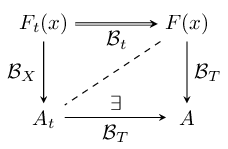
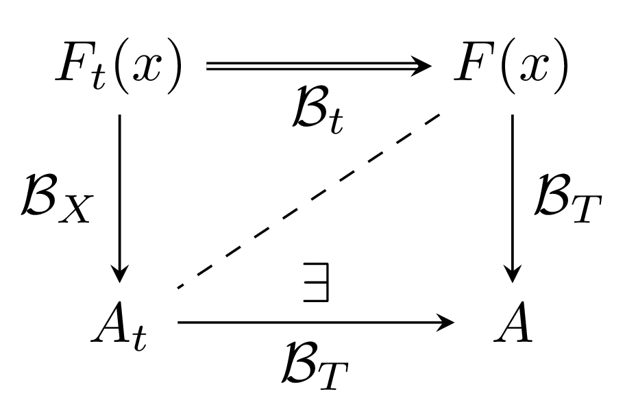

tikz-ext-png.texmyfigure.pngmyfigure-600.png (600dpi)tikz-ext-png-debug.textikz-ext-png.texHere we render out two png files: one at 150dpi and a second at 600dpi.
\documentclass[a4paper]{article}
\usepackage[margin=8mm]{geometry}
\usepackage{tikz,pgfplots}
\usetikzlibrary{matrix}
\pgfplotsset{compat=1.12}
\usepgfplotslibrary{external} % creates a tight self-contained pdf figure for each tikzpicture
\tikzexternalize % comment out to debug if latex errors: generates the external pdf
\tikzset{external/force remake} % otherwise will use external pdf if it exists
\tikzset{png export/.style={
external/system call={
pdflatex \tikzexternalcheckshellescape
-halt-on-error -interaction=batchmode -jobname "\image" "\texsource";
convert -units pixelsperinch -density 150 "\image.pdf" "\image.png";
convert -units pixelsperinch -density 600 "\image.pdf" "\image-600.png";
}}}
\tikzset{png export}
\tikzsetexternalprefix{figures/} % output the pdf to an existing directory (needs to exist)
\tikzsetnextfilename{myfigure}
\begin{document}
\section*{tikzpicture to be externalized to pdf and converted to png(s)}
\begin{tikzpicture}
\matrix (m) [matrix of math nodes,row sep=3em,column sep=4em,minimum width=2em]
{ F_t(x) \pgfmatrixnextcell F(x) \\
A_t \pgfmatrixnextcell A \\};
\path[-stealth]
(m-1-1) edge node [left] {$\mathcal{B}_X$} (m-2-1)
edge [double] node [below] {$\mathcal{B}_t$} (m-1-2)
(m-2-1.east|-m-2-2) edge node [below] {$\mathcal{B}_T$}
node [above] {$\exists$} (m-2-2)
(m-1-2) edge node [right] {$\mathcal{B}_T$} (m-2-2)
edge [dashed,-] (m-2-1);
\end{tikzpicture}
\section*{Checking quality and size of converted png(s)}
Check that the native figure size is correct by importing the generated png(s) \emph{without scaling}.
\subsection*{150dpi figure}
\includegraphics{figures/myfigure.png}
\subsection*{600dpi figure}
\includegraphics{figures/myfigure-600.png}
\end{document}myfigure.png
myfigure-600.png (600dpi)
\usepgfplotslibrary{external} needs your latex system to be configured to run shell commands
--shell-escape such aspdflatex --file-line-error --shell-escape --synctex=1figures subdirectory if you use the \tikzsetexternalprefix line (as above)
figures/myfigure.pdf and figures/myfigure.pngmyfigure.pdf and myfigure.png (in the same directory)convert command from Imagemagick®
/opt/local/binsips -s format png --out "\image.png" "\image.pdf";sips is pre-installed on OSXtikz-ext-png-debug.texUse the modified latex:
\documentclass[a4paper]{article}
\usepackage[margin=8mm]{geometry}
\usepackage{tikz,pgfplots}
\usetikzlibrary{matrix}
\pgfplotsset{compat=1.12}
\usepgfplotslibrary{external} % creates a tight self-contained pdf figure for each tikzpicture
\tikzexternalize % comment out to debug if latex errors: generates the external pdf
\tikzset{external/force remake} % otherwise will use external pdf if it exists
\tikzset{png export/.style={
external/system call={
% print some info to console
echo "\\n---- Checking Imagemagick/convert available ----\\n\\nPATH:" $PATH "\\n";
which convert; echo; convert -version;
pdflatex \tikzexternalcheckshellescape
-halt-on-error -interaction=batchmode -jobname "\image" "\texsource";
% convert from pdf to png
convert -units pixelsperinch -density 150 "\image.pdf" "\image.png";
convert -units pixelsperinch -density 600 "\image.pdf" "\image-600.png";
}}}
\tikzset{png export}
\tikzsetexternalprefix{figures/} % output the pdf to an existing directory (needs to exist)
\tikzsetnextfilename{myfigure}
\begin{document}
\section*{tikzpicture to be externalized to pdf and converted to png(s)}
\begin{tikzpicture}
\matrix (m) [matrix of math nodes,row sep=3em,column sep=4em,minimum width=2em]
{ F_t(x) \pgfmatrixnextcell F(x) \\
A_t \pgfmatrixnextcell A \\};
\path[-stealth]
(m-1-1) edge node [left] {$\mathcal{B}_X$} (m-2-1)
edge [double] node [below] {$\mathcal{B}_t$} (m-1-2)
(m-2-1.east|-m-2-2) edge node [below] {$\mathcal{B}_T$}
node [above] {$\exists$} (m-2-2)
(m-1-2) edge node [right] {$\mathcal{B}_T$} (m-2-2)
edge [dashed,-] (m-2-1);
\end{tikzpicture}
\section*{Checking quality and size of converted png(s)}
Check that the native figure size is correct by importing the generated png(s) \emph{without scaling}.
\subsection*{150dpi figure}
\includegraphics{figures/myfigure.png}
\subsection*{600dpi figure}
\includegraphics{figures/myfigure-600.png}
\end{document}If convert is succesfully found should induce this portion of the console message:
---- Checking Imagemagick/convert available ----
PATH: /usr/bin:/bin:/usr/sbin:/sbin:/usr/texbin:/usr/local/bin:/opt/local/bin
/opt/local/bin/convert
Version: ImageMagick 6.9.0-0 Q16 x86_64 2015-07-29 http://www.imagemagick.org
Copyright: Copyright (C) 1999-2014 ImageMagick Studio LLC
Features: DPC Modules
Delegates (built-in): bzlib djvu fftw fontconfig freetype gslib jbig jng jp2 jpeg lcms ltdl lzma openexr png ps tiff webp x xml zlib
If convert cannot be found or your PATH can’t point to it then hardwire the path such as follows:
/opt/local/bin/convert -units pixelsperinch -density 150 "\image.pdf" "\image.png";
If silent weird things are happening then comment out the externalization like this %\tikzexternalize. This will let latex stop and display errors.
[06 Sep 2016] —
Latex labels with MATLAB®[21 Jul 2015] — TikZ–tikzexternalize to png [18 Jul 2015] —
Spherical Harmonics LaTeX Macros[01 Aug 2015] —
BibDesk Publication html Export[06 Aug 2015] —
Spherical Harmonic Plotting with MATLAB®[18 Jul 2015] —
Spherical Harmonics LaTeX Macros[16 Jul 2015] —
Spherical Harmonic MATLAB® Code 1[31 Jul 2015] —
Outputing png from pgfornament[18 Jul 2015] —
Improving Gauss-Legendre{kind=link}
{kind=link}